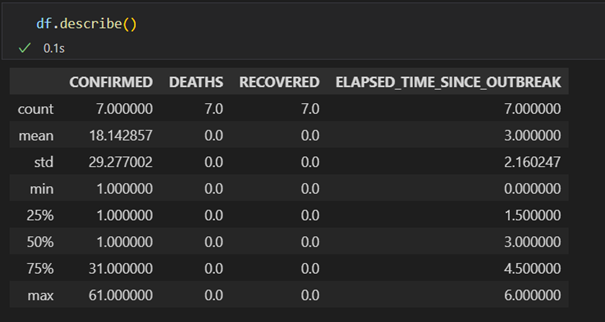

Organizing data: pandas
University of Stavanger
Apr 4, 2023
Table of contents
Create DataFrame from dictionary
Filtering and visualizing data
Performing mathematical operations on DataFrames
Grouping, filtering and aggregating data
What is Pandas?
Pandas is a Python package that among many things are used to handle data, and perform operations on groups of data. It is built on top of Numpy, which makes it easy to perform vectorized operations. Pandas is written by Wes McKinney, and one of it objectives is according to the official website '' providing fast, flexible, and expressive data structures designed to make working with ''relational'' or ''labeled'' data both easy and intuitive. It aims to be the fundamental high-level building block for doing practical, real-world data analysis in Python''. Pandas also has excellent functions for reading and writing excel and csv files. An excel file is read directly into memory in what is called a DataFrame in Pandas. A DataFrame is a two dimensional object where data are typically stored in column or row format. Pandas has a lot of functions that can be used to calculate statistical properties of the data frame as a whole. In this chapter we will focus on basic data manipulation, stuff you might do in excel, but can be done much faster in Python and Pandas.
Creating a data frame
In the following we will assume that you have imported pandas, like this
import pandas as pd
From empty DataFrame
This is perhaps the most basic way of creating a DataFrame, first we create an empty DataFrame
df = pd.DataFrame()
Note that we often use df as a variable name for a DataFrame, this is a choice, but it is a usually a good choice as someone else reading the code could infer from a name that df is a DataFrame. If you need more than one DataFrame variable you could use df1, df2, etc. or even better to use a descriptive name, df_sales_data.
Next, we can add columns to the DataFrame
df=pd.DataFrame()
df['ints']=[0,1,2,3]
df['floats']=[4.,5.,6.,7.]
df['tools']=['hammer','saw','rock','nail']
print(df) # to view data frame
Note that all columns needs to have the same size.
pd.Series()
Even if we initialize the DataFrame column with a list, the command type(df['a']) will tell you that the column in the DataFrame are of type pd.Series(). Thus the fundamental objects in Pandas are of type Series. Series are more flexible, and it is possible to calculate df['a']/df['b'], whereas [0,1,2,3]/[4,5,6,7] is not possible.
Create DataFrame from dictionary
A DataFrame can be quite easily be generated from a dictionary. A dictionary is a special data structure, where an unique key is associated with a data type (key:value pair). In this case, the key would be the title of the column, and the value would be the data in the columns.
my_dict={'ints':[0,1,2,3], 'floats':[4.,5.,6.,7.],
'tools':['hammer','saw','rock','nail']
}
df=pd.DataFrame(my_dict)
print(df) # to view
From file
Assume you have some data organized in excel or in a csv file. The csv file could just be a file with column data, they could be separated by a comma or tab
Figure 1: Official Covid-19 data, and example of files (left) tab separated (right) excel file.

df=pd.read_excel('../data/corona_data.xlsx') # excel file
df2=pd.read_csv('../data/corona_data.dat',sep='\t') # csv tab separated file
If the excel file has several sheets, you can give the sheet name directly, e.g. df=pd.read_excel('file.xlsx',sheet_name="Sheet1"), for more information see the documentation.
Accessing files from python can be painful. If excel files are open in excel, Windows will not allow a different program to access it - always remember to close the file before opening it. Sometimes we are not in the right directory, to check which directory you are in, you can always do the following
import os
print(os.getcwd()) # prints current working directory
We can easily save the data frame to excel format and open it in excel
df.to_excel('covid19.xlsx', index=False) # what happens if you put index=True?
Whenever you create a DataFrame Pandas by default create an index column, it contains an integer for each row starting at zero. It can be accessed by df.index, and it is also possible to define another column as index column.
Accessing data in DataFrames
Selecting columns
If we want to pick out a specific column we can access it in the following ways
# following two are equivalent
time=df['TIME'] # by the name, alternatively
time=df[df.columns[1]]
# following two are equivalent
time=df.loc[:,['TIME']] # by loc[] if we use name
time=df.iloc[:,1] # by iloc, pick column number 1
The loc[] and iloc[] functions also allows for list slicing, one can then pick e.g. every second element in the column by time=df.iloc[::2,1] etc. The difference is that loc[] uses the name, and iloc[] the index (usually an integer).
Why several ways of doing the same operation? It turns out that although we are able to extract what we want with these operations, they are of different type
print(type(df['TIME']))
print(type(df.loc[:,['TIME']]))
Selecting rows
When selecting rows in a DataFrame, we can use the loc[] and iloc[] functions
# pick column number 0 and 1
time=df.loc[0:1,:] # by loc[]
time=df.iloc[0:2,:] # by iloc
pandas.DataFrame.loc vs pandas.DataFrame.iloc
When selecting rows loc and iloc they behave differently, loc includes the endpoints (in the example above both row 0 and 1), whereas iloc includes the starting point and up to 1 minus the endpoint.
Challenges when accessing columns or rows
Sometimes when reading files from excel, headers may contains invisible characters like newline \n or tab \t or maybe Norwegian special letters that have not been read in properly. If you have problem accessing a column by name do print(df.columns) and check if the name matches what you would expect.
If the header names has unwanted white space, one can do
df.columns = df.columns.str.replace(' ', '') # all white spaces
df.columns = df.columns.str.lstrip() # the beginning of string
df.columns = df.columns.str.rstrip() # end of string
df.columns = df.columns.str.strip() # both ends
Similarly for unwanted tabs
df.columns = df.columns.str.replace('\t', '') # remove tab
If you want to make sure that the columns does not contain any white spaces, one can use pandas.Series.str.strip()
df['LOCATION']=df['LOCATION'].str.strip()
Time columns not parsed properly
If you have dates in the file (as in our case for the TIME column), you should check if they are in the datetime format and not read as str.
datetime
The datetime library is very useful for working with dates. Data types of the type datetime (or equivalently timestamp used by Pandas) contains both date and time in the format YYYY-MM-DD hh:mm:ss. We can initialize a variable, a, by a=datetime.datetime(2022,8,30,10,14,1), to access the hour we do a.hour, the year by a.year etc. It also easy to increase e.g. the day by one by doing a+datetime.timedelta(days=1).
import datetime as dt
time=df['TIME']
# what happens if you set
# time=df2['TIME'] #i.e df2 is from pd.read_csv ?
print(time[0])
print(time[0]+dt.timedelta(days=1))
The code above might work fine or in some cases a date is parsed as a string by Pandas, then we need to convert that column to the correct format. If not, we get into problems if you want to plot data vs the time column.
Below are two ways of converting the TIME column
df2['TIME']=pd.to_datetime(df2['TIME'])
# just for testing that everything went ok
time=df2['TIME']
print(time[0])
print(time[0]+dt.timedelta(days=1))
Another possibility is to do the conversion when reading the data:
df2=pd.read_csv('../data/corona_data.dat',sep='\t',parse_dates=['TIME'])
If you have a need to specify all data types, to avoid potential problems down the line this can also be done. First create a dictionary, with column names and data types
types_dict={"LOCATION":str,"TIME":str,"ELAPSED_TIME_SINCE_OUTBREAK":int,"CONFIRMED":int,"DEATHS":int,"RECOVERED":int}
df2=pd.read_csv('../data/corona_data.dat',sep='\t',dtype=types_dict,parse_dates=['TIME']) # set data types explicit
Note that the time data type is str, but we explicitly tell Pandas to convert those to datetime.
Filtering and visualizing data
Boolean masking
Typically you would select rows based on a criterion, the syntax in Pandas is that you enter a series containing True and False for the rows you want to pick out, e.g. to pick out all entries with Afghanistan we can do
df[df['LOCATION'] == 'Afghanistan']
The innermost statement df['LOCATION'] == 'Afghanistan' gives a logical vector with the value True for the five last elements and False for the rest. Then we pass this to the DataFrame, and in one go the unwanted elements are removed. It is also possible to use several criteria, e.g. only extracting data after a specific time
df[(df['LOCATION'] == 'Afghanistan') & (df['ELAPSED_TIME_SINCE_OUTBREAK'] > 2)]
Note that the parenthesis are necessary, otherwise the logical operation would fail.
Plotting a DataFrame
Pandas has built in plotting, by calling pandas.DataFrame.plot.
df2=df[(df['LOCATION'] == 'Afghanistan')]
df2.plot()
#try
#df2=df2.set_index('TIME')
#df2.plot() # what is the difference?
#df2.plot(y=['CONFIRMED','DEATHS'])
Performing mathematical operations on DataFrames
When performing mathematical operations on DataFrames there are at least two strategies
- Extract columns from the DataFrame and perform mathematical operations on the columns using Numpy, leaving the original DataFrame intact
- To operate directly on the data in the DataFrame using the Pandas library
Using Pandas or Numpy should in principle be equally fast. The advice is to not worry about performance before it is necessary. Use the methods you are confident with, and try to be consistent. By consistent, we mean that if you have found one way of doing a certain operation stick to that one and try not to implement many different ways of doing the same thing.
We can always access the individual columns in a DataFrame by the syntax df['column_name'].
Example: mathematical operations on DataFrames
- Create a DataFrame with one column (
a) containing ten thousand random uniformly distributed numbers between 0 and 1 (checkout np.random.uniform) - Add two new columns: one which all elements of
ais squared and one where the sine function is applied to columna - Calculate the inverse of all the numbers in the DataFrame
- Make a plot of the results (i.e.
avsa*a, andavssin(a))
Solution
- First we make the DataFrame
import numpy as np
import pandas as pd
N=10000
a=np.random.uniform(0,1,size=N)
df=pd.DataFrame() # empty DataFrame
df['a']=a
If you like you could also try to use a dictionary. Next, we add the new columns
df['b']=df['a']*df['a'] # alternatively np.square(df['a'])
df['c']=np.sin(df['a'])
- The inverse of all the numbers in the DataFrame can be calculated by simply doing
1/df
Note: you can also do df+df and many other operations on the whole DataFrame.
- To make plots there are several possibilities. Personally, I tend most of the time to use the matplotlib library, simply because I know it quite well, but Pandas has a great deal of very simple methods you can use to generate nice plots with very few commands.
Matplotlib:
import matplotlib.pyplot as plt
plt.plot(df['a'],df['b'], '*', label='$a^2$')
plt.plot(df['a'],df['c'], '^', label='$\sin(a)$')
plt.legend()
plt.grid() # make small grid lines
plt.show()
Pandas plotting: First, let us try the built in plot command in Pandas
df.plot()
If you compare this plot with the previous plot, you will see that Pandas plots all columns versus the index columns, which is not what we want. But, we can set a to be the index column
df=df.set_index('a')
df.plot()
We can also make separate plots
df.plot(subplots=True)
or scatter plots
df=df.reset_index()
df.plot.scatter(x='a',y='b')
df.plot.scatter(x='a',y='c')
Note that we have to reset the index, otherwise there are no column named a.
Grouping, filtering and aggregating data
Whenever you have a data set, you would like to do some exploratory analysis. That typically means that you would like to group, filter or aggregate data. Perhaps, we would like to plot the covid data not per country, but the data as a function of dates. Then you first must sort the data according to date, and then sum all the occurrences on that particular date. For all of these purposes we can use the pd.DataFrame.groupby() function. To sort our DataFrame on dates and sum the occurrences we can do
df.groupby('TIME').sum()
Another case could be that we wanted to find the total number of confirmed, deaths and recovered cases in the full database. As always in Python it can be done in different ways, by e.g. splitting the database into individual countries and do df[['CONFIRMED','DEATHS','RECOVERED']].sum() or accessing each column individually and sum each of them e.g. np.sum(df['CONFIRMED']). However, with the groupby() function
(see figure 2 for final result)
df.groupby('LOCATION').sum()
Here Pandas sum all columns with the same location, and drop columns that cannot be summed. By doing df.groupby('LOCATION').mean() or df.groupby('LOCATION').std() we can find the mean or standard deviation (per day).
Figure 2: The results of df.groupby('LOCATION').sum().

Simple statistics in Pandas
At the end it is worth mentioning the built in methods pd.DataFrame.mean, pd.DataFrame.median, pd.DataFrame.std which calculates the mean, median and standard deviation on the columns in the DataFrame where it make sense (i.e. avoid strings and dates). To get all these values in one go (and a few more) on can also use pd.DataFrame.describe()
df.describe()
The output is shown in figure 3
Figure 3: Output from the describe command.

Joining two DataFrames
Appending DataFrames
The DataFrame with the Covid-19 data in the previous section could have been created from two separate DataFrames, using concat(). First, create two DataFrames
import datetime as dt
a=dt.datetime(2020,2,24,23,59)
b=dt.datetime(2020,2,7,23,59)
my_dict1={'LOCATION':7*['Afghanistan'],
'TIME':[a+dt.timedelta(days=i) for i in range(7)],
'ELAPSED_TIME_SINCE_OUTBREAK':[0, 1, 2, 3, 4, 5, 6],
'CONFIRMED':7*[1],
'DEATHS':7*[0],
'RECOVERED': 7*[0]}
my_dict2={'LOCATION':6*['Diamond Princess'],
'TIME':[b+dt.timedelta(days=i) for i in range(6)],
'ELAPSED_TIME_SINCE_OUTBREAK':[0, 1, 2, 3, 4, 5],
'CONFIRMED':[61, 61, 64, 135, 135, 175],
'DEATHS':6*[0],
'RECOVERED': 6*[0]}
df1=pd.DataFrame(my_dict1)
df2=pd.DataFrame(my_dict2)
Next, add them row wise (see figure 4)
df=pd.concat([df1,df2])
print(df) # to view
Figure 4: The result of concat().

If you compare this DataFrame with the previous one, you will see that the index column is different. This is because when joining two DataFrames Pandas does not reset the index by default, doing df=pd.concat([df1,df2],ignore_index=True) resets the index. It is also possible to join DataFrames column vise
pd.concat([df1,df2],axis=1)
Merging DataFrames
In the previous example we had two non overlapping DataFrames (separate countries and times). It could also be the case that some of the data was overlapping e.g. continuing with the Covid-19 data, one could assume that there was one data set from one region and one from another region in the same country
my_dict1={'LOCATION':7*['Diamond Princess'],
'TIME':[b+dt.timedelta(days=i) for i in range(7)],
'ELAPSED_TIME_SINCE_OUTBREAK':[0, 1, 2, 3, 4, 5, 6],
'CONFIRMED':7*[1],
'DEATHS':7*[0],
'RECOVERED': 7*[0]}
my_dict2={'LOCATION':2*['Diamond Princess'],
'TIME':[b+dt.timedelta(days=i) for i in range(2)],
'ELAPSED_TIME_SINCE_OUTBREAK':[0, 1],
'CONFIRMED':[60, 60],
'DEATHS':2*[0],
'RECOVERED': 2*[0]}
df1=pd.DataFrame(my_dict1)
df2=pd.DataFrame(my_dict2)
If we do pd.concat([df1,df2]) we will simply add all values after each other. What we want to do is to sum the number of confirmed, recovered and deaths for the same date. This can be done in several ways, but one way is to use pd.DataFrame.merge().You can specify the columns to merge on, and choose outer which is union (all data from both frames) or inner which means the intersect (only data which you merge on that exists in both frames), see figure 5 for a visual image.
Figure 5: The result of using how=outer, inner, left, or right in pd.DataFrame.merge().
To be even more specific, after performing the commands
df1.merge(df2,on=['LOCATION','TIME'],how='outer')
df1.merge(df2,on=['LOCATION','TIME'],how='inner')
we get the results in figure 6
Figure 6: Merging to dataframes using outer (top) and inner (bottom).

Clearly in this case we need to choose outer. In the merge process pandas adds an extra subscript _x and _y on columns that contains the same header name. We also need to sum those, which can be done as follows
(see figure 7 for the final result)
df=df1.merge(df2,on=['LOCATION','TIME'],how='outer')
cols=['CONFIRMED','DEATHS', 'RECOVERED']
for col in cols:
df[col]=df[[col+'_x',col+'_y']].sum(axis=1) # sum row elements
df=df.drop(columns=[col+'_x',col+'_y']) # remove obsolete columns
# final clean up
df['ELAPSED_TIME_SINCE_OUTBREAK']=df['ELAPSED_TIME_SINCE_OUTBREAK_x']
df=df.drop(columns=['ELAPSED_TIME_SINCE_OUTBREAK_y','ELAPSED_TIME_SINCE_OUTBREAK_x'])
Figure 7: Result of outer merging and summing.

Working with folders and files
When working with big data sets you might want to split data into smaller sets, and also write them to different folders (or files) to view each individually in excel. Working with files and folders in a way that will work on any kind of platform has always been a challenge, but it is greatly simplified by the Pathlib library.
Basic use of Pathlib
List all sub directories and files:
from pathlib import Path
p=Path('.') # the directory where your python file is located
for x in p.iterdir():
if x.is_dir():
print('Found dir: ', x)
elif x.is_file():
print('Found file: ', x)
List all files of a type:
p=Path('.')
for p in p.rglob("*.png"):# rglob means recursively, searches sub directories
print(p.name)
If you want to print the full path do print(p.absolute()).
Create a directory:
Path('tmp_dir').mkdir()
If you run the code twice it will produce an error, because the directory exists, then we can simply do Path('tmp_dir').mkdir(exist_ok=True).
Print current directory:
Path.cwd()
Joining paths:
p=Path('.')
new_path = p / 'tmp_dir' / 'my_file.txt'
print(new_path.absolute())
new_path.touch()
Basic use of os
We have already encountered the use of os when printing the working directory, i.e. print(os.getcwd()). If you want to create a directory named tmp, one can do
Creating a directory:
import os
os.mkdir('tmp')
Moving into a directory: To move into that directory do
os.chdir('tmp')
os.chdir('..') # move back up
Splitting data into different folders and files
Using the Pathlib library:
df=pd.read_excel('../data/corona_data.xlsx')
countries = df['LOCATION'].unique() #skip duplicates
data_folder=Path('../covid-data')
data_folder.mkdir()
for country in countries:
new_path=data_folder / country
new_path.mkdir()
excel_file=country+'.xlsx'
df2=df[df['LOCATION']==country]
df2.to_excel(new_path/excel_file,index=False)
If you run the code twice, it will fail, but that can be resolved by e.g. data_folder.mkdir(exist_ok=True).
Using the os library:
# first get all the countries:
df=pd.read_excel('../data/corona_data.xlsx')
countries = df['LOCATION'].unique() #skip duplicates
os.mkdir('../covid-data')
os.chdir('../covid-data')
for country in countries:
os.mkdir(country)
os.chdir(country)
df2=df[df['LOCATION']==country]
df2.to_excel(country+'.xlsx',index=False)
os.chdir('..') # move up
More robust way of creating a directory
def my_mkdir(name):
if os.path.isdir(name):
print('Directory ', name,' already exists')
else:
os.mkdir(name)
print('creating directory ',name)
If you want to collect all data, you can do as follows
df_new=pd.DataFrame()
data_folder=Path('../covid-data')
for dir in data_folder.iterdir():
if dir.is_dir():
file=dir.name+'.xlsx'
df=pd.read_excel(dir/file)
print('Reading file ', file)
df_new=pd.concat([df_new,df],ignore_index=True)
Writing more robust code
Most likely in the last sections you have encountered quite long error messages from Python. Errors could be
- syntax errors, grammatically incorrect code e.g. calling functions that does not exists, using variables that are not defined or writing lines of codes with missing instructions, indentation errors
- exceptions e.g. open a file that does not exists, accessing a Pandas header with the wrong name, performing wrong mathematical operations (1/0)
- logical errors (bugs), code that runs but produces wrong results. These errors are of course some of the most difficult errors to fix and can only be discovered by comparing the output of the code to known answers. In many cases errors are introduced when extending the code, and unit tests can be extremely helpful.
In the rest of this section we will discuss how to avoid or to handle exceptions. The goal is to write a code that catch all the exceptions before they happen, tries to do something with them, if not prints out a reasonable error message of what went wrong.
Let us look at the code that we have written so far, starting from the top of the notebook.
Accessing columns in Pandas: So far we have just accessed the columns directly, but it is very quick to write a wrong name, thus instead of doing
time=df['TIME']
we should try to check if the column exist before accessing it from the DataFrame. There are many ways of achieving this
def get_column_from_dataframe(name,df):
'''
name: name of column
df: Pandas DataFrame
returns: column if found, and empty otherwise
'''
if name in df.columns:
return df[name]
else:
print('Column not found')
print('Possible column names are : ', df.columns)
return pd.Series(dtype=object)
# run the following code with df containing covid data
get_column_from_dataframe('TIME2',df)
get_column_from_dataframe('TIME',df)
Note the use of doc string in the beginning, the doc string will be printed in advanced editors once you write the name of the function. It also helps you to remember what the function does. It is a good practice to return something of the same type, because then the rest of the code can execute. If it is critical that you find the name of the column you can always test from the outside
s=get_column_from_dataframe('TIME2',df)
if s.empty:
print('Exiting ...')
exit() # note this shuts down the kernel
In the function get_column_from_dataframe many more things could go wrong, the user could pass a variable that is not a DataFrame, to catch all exceptions one can do
def get_column_from_dataframe_v2(name,df):
'''
name: name of column
df: Pandas DataFrame
returns: column if found, and empty otherwise
'''
try:
return df[name]
except:
print('Something went wrong ...')
print('Maybe wrong column name?')
return pd.Series(dtype=object)
# run the following code with df containing covid data
get_column_from_dataframe_v2('TIME2',df)
The try and except handling is very elegant in Python, and a very easy way of making the code more robust. Python first tries df[name] if that is not successful (e.g. wrong column name, wrong DataFrame, maybe Pandas is not even imported) it jumps to the exception.
Another thing to consider is to use case insensitive search, we should be able to access a country or a header using e.g. Afghanistan or afghanistan. A possible solution could be to make sure that when you read in the
def get_column_from_dataframe_v3(name,df):
'''
name: name of column (case insensitive)
df: Pandas DataFrame
returns: column if found, and empty otherwise
'''
COL=df.columns.str.upper()
NAME=name.upper()
try:
idx=COL.get_loc(NAME)
return df.iloc[:,idx]
except:
print('Column not found')
print('Possible column names are : ', df.columns)
return pd.Series(dtype=object)
get_column_from_dataframe_v3('time',df)
Now, we might want to make our code more robust when collecting data for e.g. a specific country df[df['LOCATION'] == 'Afghanistan']. This operation assumes 1) that the column LOCATION exists and 2) that the country is spelled correctly. However, we have already written code to get a column and check that it exists, but it is written inside a function with a different purpose. Thus, it is better to split the code above in two parts
def get_col_index(name,df):
'''
name: name of column (case insensitive)
df: Pandas DataFrame
returns: pos if exists, and -1 otherwise
'''
COL=df.columns.str.upper()
NAME=name.upper()
try:
return COL.get_loc(NAME)
except:
print('Column not found')
print('Possible column names are : ', df.columns)
return -1
def get_column_from_dataframe_v4(name,df):
'''
name: name of column (case insensitive)
df: Pandas DataFrame
returns: column if found, and empty otherwise
'''
idx=get_col_index(name,df)
if idx>-1:
return df.iloc[:,idx]
else:
return pd.Series(dtype=object)
def get_rows_from_dataframe(name,df,col='LOCATION'):
'''
name: name of rows (case insensitive)
df: Pandas DataFrame
col: name of column to use as logical test
returns: DataFrame, and empty otherwise
'''
idx=get_col_index(col,df)
if idx>-1:
NAME=name.upper()
return df[df.iloc[:,idx].str.upper() == NAME]
else:
return pd.DataFrame()
get_rows_from_dataframe('afGhaniStan',df)
To summarize:
- We want to catch errors before they occur, this is most efficiently done by wrapping simple operations in functions
- Functions should be small, i.e. only to as little as possible, that would increase their reusability
- Almost all exceptions can be caught by using
tryandexceptfunctionality in Python - Write doc strings in functions to increase user friendliness
- Write meaningful error messages, if possible also print out some additional information to help the user
Bibliography